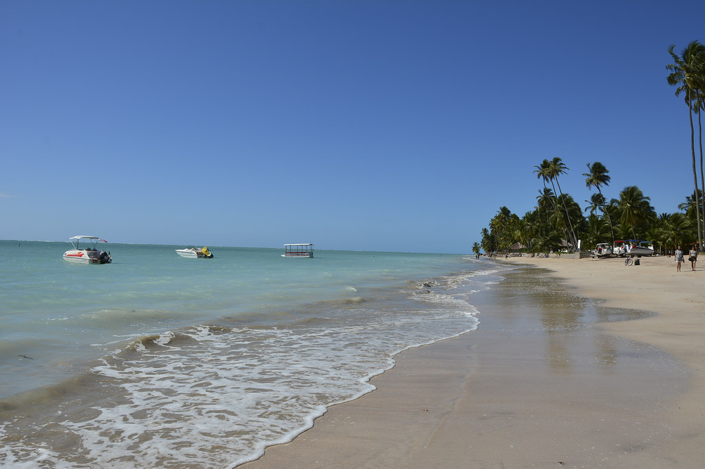

Região Nordeste
Composta pelos estados: Maranhão, Piauí, Ceará, Rio Grande do Norte, Paraíba, Pernambuco, Alagoas, Sergipe e Bahia.
Principais pontos turísticos:
- Recife e Olinda: Duas cidades em Pernambuco, famosas por sua cultura, arte, música e festividades populares, como o Carnaval de Olinda.
- Chapada das Mesas: Uma região no Maranhão, conhecida por suas formações rochosas, cachoeiras, cânions e cavernas.
- Parque Nacional da Serra da Capivara: Um parque no Piauí, conhecido por suas formações rochosas, sítios arqueológicos e pinturas rupestres pré-históricas.
- Lençóis Maranhenses: Uma região no Maranhão, conhecida por suas dunas de areia branca, lagoas de água doce e vegetação típica do cerrado.
- Vale do Catimbau: Um parque em Pernambuco, conhecido por suas formações rochosas, cânions, cavernas e sítios arqueológicos.
- Ponta do Seixas: O ponto mais oriental do Brasil, localizado na Paraíba, conhecido por suas praias e paisagens naturais.
- Trilha do Morro do Careca: Localizada em Natal, Rio Grande do Norte, esta trilha leva os visitantes a uma das vistas mais impressionantes da cidade, com uma vista panorâmica da Praia de Ponta Negra.
- Trilha do Parque Nacional da Chapada Diamantina: Localizada na Bahia, esta trilha oferece uma vista incrível do Vale do Pati, com suas montanhas e rios cristalinos.
- Alagoas: Praia do Francês, Praia de Maragogi, Praia de São Miguel dos Milagres, Foz do Rio São Francisco, Praia de Antunes.
- Bahia: Pelourinho, Morro de São Paulo, Praia do Forte, Lençóis, Porto Seguro.
- Ceará: Jericoacoara, Canoa Quebrada, Praia do Futuro, Fortaleza.
- Maranhão: São Luís, Alcântara, Parque Nacional dos Lençóis Maranhenses.
- Paraíba: João Pessoa, Cabo Branco, Praia de Tambaú, Areia Vermelha
- Pernambuco: Recife, Olinda, Fernando de Noronha, Praia dos Carneiros.
- Piauí: Parque Nacional Serra da Capivara, Delta do Parnaíba, Teresina, São Raimundo Nonato.
- Rio Grande do Norte: Natal, Praia de Pipa, Dunas de Genipabu, Parque das Dunas.
- Sergipe: Praia do Saco, Cânion do Xingó, Praia de Atalaia, Mercado Municipal de Aracaju, Museu da Gente Sergipana

Monumentos famosos:
- Farol da Barra - Salvador
- Forte dos Reis Magos - Natal
- Marco Zero - Recife
Patrimônios culturais do Brasil
- Centro Histórico de Salvador - Bahia
- Centro Histórico de Olinda - Pernambuco
- Centro Histórico de São Luís - Maranhão
- Conjunto Histórico de Porto Seguro - Bahia
- Sítio Arqueológico de São Miguel Arcanjo - Alagoas
- Parque Nacional da Serra da Capivara - Piauí
- Museu Afro-Brasileiro - Salvador, Bahia
Patrimônios imateriais do Brasil
- Roda de Capoeira
- Samba de Roda do Recôncavo Baiano
- Ofício das Baianas de Acarajé
- Bumba-meu-boi - Maranhão
- Festa do Divino Espírito Santo - Maranhão
- Frevo - Pernambuco
- Maracatu - Pernambuco
- Reisado - Alagoas
- Artesanato em barro - Pernambuco
- Feira de Caruaru - Pernambuco

Patrimônios Naturais Brasil
- Parque Nacional da Chapada Diamantina - Bahia
- Parque Nacional dos Lençóis Maranhenses - Maranhão
- Parque Nacional Marinho Fernando de Noronha - Pernambuco
- Parque Nacional do Monte Pascoal - Bahia

Melhor período para viajar
A melhor época para visitar o Nordeste é durante o inverno, de junho a setembro, quando as chuvas diminuem e as temperaturas estão mais amenas. As praias são as principais atrações nessa região, e o clima mais seco é ideal para atividades como mergulho e passeios de barco.

Clima
Esta região é predominantemente semiárida, com chuvas concentradas em um período curto de tempo. As temperaturas são elevadas durante todo o ano, com médias anuais de 28 °C.

Comidas típicas
A culinária do Nordeste é influenciada pela cultura africana e indígena, com pratos apimentados e muito saborosos. Alguns dos pratos mais populares são a feijoada nordestina, o acarajé, a moqueca de peixe, o sarapatel, o baião de dois e o cuscuz.